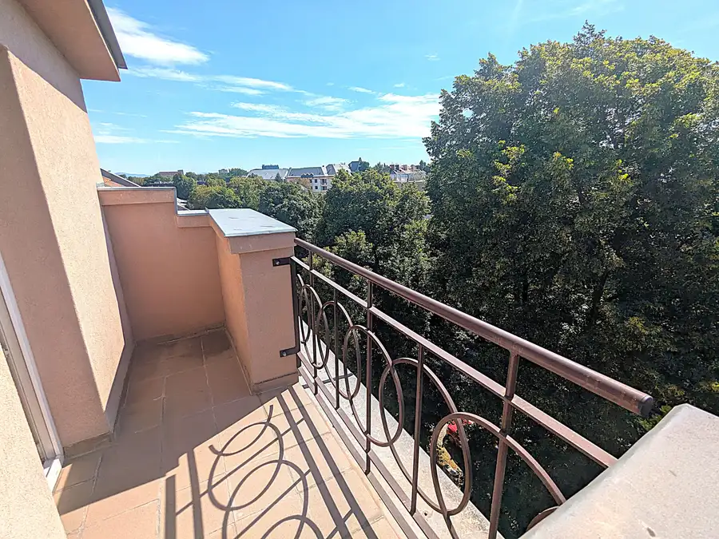
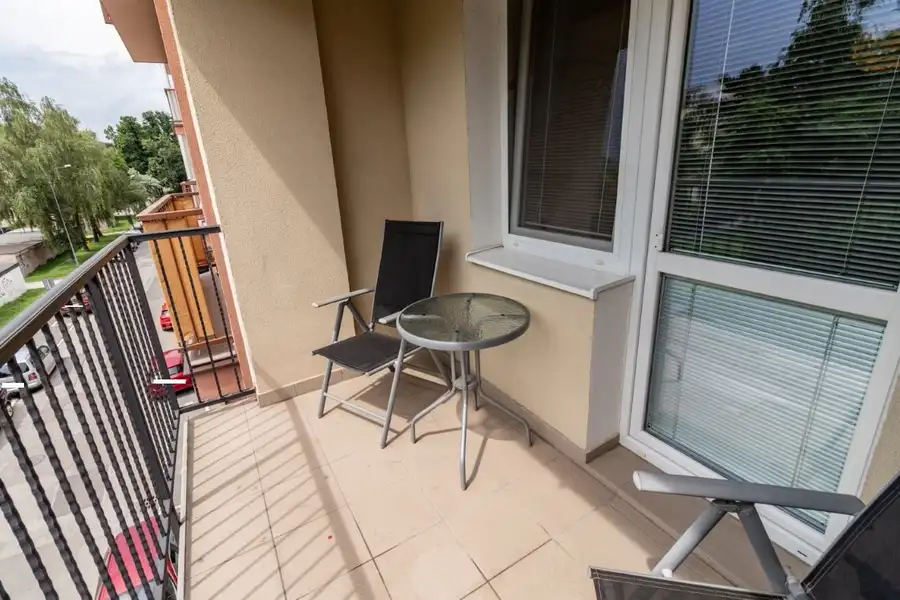

Atraktívny 2-izbový byt s galériou pri historickom centre – Jiskrova ul., parkovanie vo dvore
Staré Mesto, Košice
- Dispozícia2-izbový
- Plocha50 m²
- Poschodie5. z 5
- StavKompletná rekonštrukcia
- VlastníctvoOsobné
- Energetická triedaB
O nehnuteľnosti
Ing. Juraj Antol – ANTE REALITY, viac ako 27 rokov skúseností v realitách, člen Realitnej únie SR, ponúka na prenájom kompletne zrekonštruovaný a zariadený 2-izb. byt s galériou, na Jiskrovej ul., pár minút pešej chôdze od historického centra Košíc.Byt zaujme nielen svojou výbornou polohou, ale aj netradičným riešením interiéru s galériou, ktoré mu dodáva osobitý charakter a vytvára zaujímavejší a vzdušnejší priestor. Veľkou výhodou je možnosť parkovania pre 1 auto priamo vo dvore byt. domu. PREČO PRÁVE TENTO BYT?•historické centrum Košíc na pár minút pešo•galéria – zaujímavý a netradičný prvok bytu•kompletne zrekonštruovaný, zariadený, klimatizovaný•parkovanie priamo vo dvore bytového domu•vlastné kúrenie•energie a internet zahrnuté v nájomnom•výborná dostupnosť k vlakovej+autobusovej stanici•ideálne bývanie pre 1 osobu LOKALITA – VŠETKO NA DOSAHJiskrova ulica patrí medzi lokality s mimoriadne výhodnou polohou. Bývate prakticky v centre mesta, no zároveň mimo najrušnejšej časti hist. centra. V pešej dostupnosti OC Aupark, železničnú a autobusovú stanicu, mestský park, plaváreň, divadlo, množstvo obchodov, služieb, reštaurácií a kaviarní. Auto môžete nechať vo dvore a väčšinu každodenných potrieb vybaviť pohodlne pešo.CHARAKTERISTIKA BYTU•výmera cca 50 m²•2-izbový byt s atypickou galériou•tehlový bytový dom•4.posch. bez výťahu•kompl. zrekonštruovaný•kompl zariadený vrátane elektrospotrebičov, klimatizovaný s vlastným kúrením•možnosť parkovania pre 1 auto vo dvore•voľný ihneď DISPOZÍCIA2 izby, kuchyňa, kúpeľňa so sprchovacím kútom a WC, chodba, galéria CENA A PODMIENKY NÁJMUNájomné je vrátane energií a internetu. Pri podpise nájomnej zmluvy sa hradí: 1 × mesačné nájomné a depozit vo výške 2 × nájmovByt je určený pre 1 osobu. Nefajčiarsky byt, bez domácich zvierat. VÝHODA PRE KOLEGOV ALEBO PRIATEĽOVV objekte sa nachádzajú aj ďalšia bytová jednotka určené na prenájom. Je to preto zaujímavá možnosť pre kolegov, priateľov alebo známych, ktorí chcú bývať v tesnej blízkosti, ale každý vo vlastnom byte.________________________________________Ponuky a záujem o prenájom prosíme zasielať výhradne e-mailom: antol@seznam.cz Následne Vás budeme kontaktovať.ATTRACTIVE 2-BEDROOM APARTMENT WITH A LOFT NEAR THE HISTORIC CITY CENTRE – JISKROVA STREET, PARKING IN THE COURTYARDIng. Juraj Antol – ANTE REALITY, with more than 27 years of experience in real estate and a member of the Slovak Real Estate Union, offers for rent a fully renovated and furnished 2-bedroom apartment with a loft, located on Jiskrova Street, just a few minutes walk from the historic city centre of Košice.The apartment stands out not only for its excellent location, but also for its unusual interior layout with a loft, which gives the apartment a distinctive character and creates a more interesting and spacious atmosphere.Another great advantage is the possibility of parking one car directly in the courtyard of the apartment building.WHY THIS APARTMENT?historic city centre of Košice just a few minutes' walk awayloft – an interesting and unique feature of the apartmentfully renovated and furnishedair conditioningparking directly in the courtyard of the apartment buildingprivate heatingutilities and internet included in the rentexcellent access to the railway and bus stationsideal accommodation for 1 personLOCATION – EVERYTHING WITHIN EASY REACHJiskrova Street is located in a highly desirable and exceptionally convenient area. You are practically in the city centre, while still being outside the busiest part of the historic centre.Within walking distance you will find:historic city centre of Košice, Aupark Shopping Centre,railway and bus stations,city park, swimming pooltheatre,numerous shops, services, restaurants and cafésYou can leave your car safely in the courtyard and conveniently reach most places you need in your daily life on foot.floor area: approx. 50 m², 2-bedroom apartment with an atypical loft, brick apartment building4th floorno elevatorfully renovatedfully furnished, including electrical appliancesair conditioningprivate heatingparking for 1 car available in the courtyardavailable immediatelyLAYOUT2 separate rooms, kitchen, bathroom with shower and toilet, hallway loft.The rent includes utilities and internet. Upon signing the lease agreement, the following payments are required:1 × monthly rent security deposit equal to 2 × monthly rentThe apartment is intended for 1 person. Non-smoking apartment. No pets allowed.AN ADVANTAGE FOR COLLEAGUES OR FRIENDSThere are also other apartments available for rent in the same building. This makes the property an interesting option for colleagues, friends or acquaintances who would like to live close to each other while each having their own private apartment.Please send all rental inquiries exclusively by e-mail: antol@seznam.czWe will contact you afterwards.
Parametre
| Cena vrátane energií | Áno |
|---|---|
| Druh | 2 izbový byt |
| Dátum zverejnenia | 10. 8. 2026 |
| Energetický certifikát budovy | B |
| Orientácia | Východná |
| Podlažie | 5 |
| Počet izieb / miestností | 2 |
| Počet nadzemných podlaží | 5 |
| Počet vonkajších parkovacích miest | 1 |
| Rok výstavby | 1958 |
| Stav nehnuteľnosti | Kompletná rekonštrukcia |
| Telekomunikácie | Internet, Káblová TV |
| Typ | Prenájom |
| Typ konštrukcie | Tehlová |
| Umiestnenie | Posledné podlažie |
| Vlastníctvo | Osobné |
| Vybavenie | Vonkajšie parkovacie miesto |
| Vykurovanie | Klimatizacia, Lokálne |
| Úžitková plocha | 50 m² |
Kde to je


Mohlo by Vás zaujímať

BytNové10 Cena dohodouAtypický 3-izbový byt s galériou pri historickom centre – Jiskrova ul., parkovanie vo dvore Staré Mesto, Košice 3-izbový75 m²4. podlažie Ing. Juraj Antol – ANTE REALITY, viac ako 27 rokov skúseností v realitách, člen Realitnej únie SR, ponúka na prenájom kompletne zrekonštruovaný a…
BytNové10 Cena dohodouPekný 2 izbový byt, v blízkosti CENTRA Košíc (Park Angelinum), rekonštruovaný, zariadený Staré Mesto, Košice 2-izbový59 m²2. podlažie PONUKY NA NÁJOM PROSÍME ZASIELAŤ VÝHRADNE E-MAILOM: antol@seznam.czĎakujeme, záujemcov budeme následne kontaktovať.Ing. Juraj Antol – ANTE REALITY…